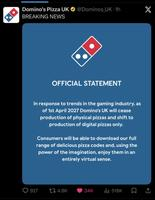

0
IEEE Spectrum argues that orbital data centers remain far from economically or technically practical despite Elon Musk's prediction that space will become the cheapest place to run AI within a few years. Deploying SpaceX's proposed million-satellite constellation would require enormous increases in launch and manufacturing capacity, while cooling, radiation, maintenance, latency, orbital debris, and astronomical interference present major unresolved obstacles. Longtime Slashdot reader xetdog shares the report: Consider this: There are roughly 14,500 active satellites in orbit. Musk's Starlink constellation accounts for about two thirds of those. Both the launch cadences and satellite-manufacturing capacity would have to scale up astronomically to deploy a million orbital data center satellites. For context, there have been roughly 7,000 orbital launches in all of human history. To loft 1 million satellites into low Earth orbit on SpaceX's Starship, which is designed to carry up to 60 satellites per vehicle, would require 16,666 launches exclusively devoted to satellite deployments. Considering that SpaceX launched a record 165 orbital missions in 2025, even at 10 times that cadence, it would take a decade. And how long would it take to build 1 million satellites, given Starlink's current pace of around 4,000 per year and a generous tenfold increase in capacity? Short of a manufacturing revolution, try 25 years. Dissipating heat in space also requires enormous radiators. As IEEE Spectrum editor Dina Genkina noted, startup Starcloud has sent only one Nvidia H100 GPU into orbit, and "their radiator was too weak to let the chip run at full power." A single 700-watt H100 would require about 1.4 square meters of radiator area, while a 100-megawatt data center could need 2,500 radiators measuring 80 square meters each.
So, why are the hyperscalers hyping orbital data centers? Answer: because it's lucrative. "The Elon Musk part of it is honestly genius because he's got xAI building the data centers, SpaceX sending them to space, and Tesla building solar panels," Genkina says. "It's almost like he's paying himself."
Read more of this story at Slashdot.
According to the Wall Street Journal, SpaceX showed investors an early prototype of a slim, "handset-like" AI device running a proprietary operating system and integrating xAI technology. Elon Musk, however, denied the report, calling it "utterly false." TechCrunch reports: SpaceX, alongside sister company Tesla, does have the manufacturing expertise to pull off mass-producing a bunch of AI devices -- not to mention access to the chips needed to power any on-device compute. SpaceX has also signaled that it's keen to expand into wireless, with Starlink Mobile as a potential competitor to Verizon and AT&T. One analyst even went as far as to speculate that T-Mobile or AT&T would make fine acquisition targets for the rocket builder, though such a purchase would, undoubtedly, be pricey.
It's also not clear if SpaceX is just throwing spaghetti at the wall or if it will attempt to really mass-produce and market such a device. But one thing that seems clearer is that if OpenAI is doing it, Musk would, perhaps, want to try to do it better. [...]
Like OpenAI, SpaceX's prototype is reportedly designed to run on a proprietary operating system and integrate technology from xAI, Musk's AI company that SpaceX acquired earlier this year. This would prevent these new devices from being trapped inside another company's platforms (like Google's Android). But the intent also appears to be to create something new, with native AI interfaces. That said, the graveyard is crowded with the unsuccessful launches of AI devices from companies like Humane and Rabbit. A company wanting to sell an AI device does not equate to consumers wanting to buy such a thing. Yet.
Read more of this story at Slashdot.
Meta is reportedly developing its own cloud business that could sell access to its AI models and lease data-center computing capacity to other companies. The move would put Meta in direct competition with Amazon, Google, and SpaceX. Engadget reports: The cloud business could offer multiple services, according to [Bloomberg], like selling access to AI models run on Meta's infrastructure, or leasing the computing power of its data centers to other companies looking to train AI. Offering something akin to Amazon Web Services could help make back some of what Meta has already spent on its new bet. As part of its AI plans, the company has committed to investing $600 billion in the US by 2028. Meta has also already made more than a few expensive hires to build its AI superintelligence team. Meta Compute, the data center and AI-focused initiative Meta created in January, is currently developing the new cloud business, according to Bloomberg.
Read more of this story at Slashdot.
BrianFagioli writes: Cloudflare announced new controls that give publishers more say over how AI companies access and use their content. Beginning September 15, new Cloudflare sites will allow traditional search indexing while blocking AI training and AI agent access on ad supported pages by default. The company is also expanding its monetization efforts with a Pay-Per-Use model that aims to compensate publishers when their content contributes to AI generated answers rather than simply being crawled. Cloudflare argues that publishers should not have to choose between being discoverable online and giving away their work for free to AI systems.
Read more of this story at Slashdot.
The FAA plans to replace its 1973 ban on civilian supersonic flight over U.S. land with a noise-based standard, potentially allowing aircraft to exceed Mach 1 as long as they stay below certain sound limits. The agency aims to finalize the rules by mid-2027, opening the door for companies such as Boom Supersonic and Spike Aerospace to operate quieter next-generation passenger jets over land. Longtime Slashdot reader schwit1 shared the notice (PDF) published Tuesday by the FAA. Forbes reports: Technological advances "will eliminate the old sonic boom," FAA Administrator Bryan Bedford said in a statement. "This means we can ultimately repeal the ban from the 1970s on supersonic flight over U.S. territory while minimizing noise impacts to residents in communities along the route and near airports." The primary reason was public opposition to loud sonic booms. In the 1960s, a plane flying faster than the speed of sound -- about 660 mph at high altitudes -- created shock waves that traveled to the ground and reached human ears as a loud gunshot-like crack or thunder-like boom. Tests during that decade, including the Oklahoma City sonic boom experiments, found repeated booms broke windows, damaged property and generated thousands of public complaints.
In its 1973 ruling, the FAA stated that due to the limits of technology at that time, "a prohibition was needed to protect the public from sonic boom .... by preventing operations of a civil aircraft at a true flight Mach number greater than 1." Several years later, Air France and British Airways introduced Concorde, and were allowed to serve New York's John F. Kennedy International Airport as long as flights remained subsonic over U.S. land. Notably, "the prestigious London-New York service was the only truly profitable [Concorde] route, supported by high-powered business and celebrity travel," wrote a former British Airways network planner for Forbes in 2021.
Several U.S. companies are working on a new generation of luxurious supersonic passenger aircraft with much quieter sonic booms and improved fuel efficiency. In particular, Colorado-headquartered Boom Supersonic says it has pre-orders from United Airlines, American Airlines and Japan Airlines for its Overture jets, which will carry 60-80 passengers. Atlanta-based Spike Aerospace is developing smaller Diplomat jets for up to 18 passengers. Both companies' websites tout future transatlantic flights in under four hours.
Read more of this story at Slashdot.
An anonymous reader quotes a report from Ars Technica: US homeowners have embraced home batteries in record-breaking numbers in early 2026, spurred on by state incentives while seeking to offset rising residential electricity costs. The trend could even unlock a more flexible energy supply for power grid operators and even AI data centers. New home battery installations reached a record 673 megawatts of energy storage in the first quarter of 2026, according to the US Energy Information Administration. That trend was driven by states with high electricity prices that have implemented policies to incentivize home battery installation, Bloomberg News reported.
This residential battery trend stands out as a natural next step for states that have already successfully boosted rooftop solar adoption among homeowners, given how batteries enable homeowners to use stored solar energy at night. California and Hawaii accounted for the majority of new residential battery storage, while Texas and Arizona also saw significantly higher numbers of installations. California incentivizes homeowners with solar panels to also install batteries by offering better pricing for residential electricity exported to the grid after sunset, Bloomberg reported. Hawaii offers a one-time payment of $400 for every kilowatt of battery storage that homeowners install.
However, the record-breaking home battery installations coincided with a slowdown in residential installations of solar panels -- the result of the Trump administration and Republican-driven One Big Beautiful Bill having eliminated a 30 percent federal solar tax credit for homeowners. Nonetheless, US electricity generation from solar power continues to rise and even surpassed coal-fired generation in April. The battery installation spree also coincides with rising electricity costs for US residential customers. The Energy Information Administration's latest data shows that the nationwide average for residential electricity costs increased by more than 7 percent in April 2026 when compared to electricity costs in April 2025. So homeowners with smart home battery-management systems could benefit from storing energy when electricity prices are lowest and draining them during peak demand periods.
Read more of this story at Slashdot.
T-Mobile appears to be migrating its 303,000-core VMware environment to another platform while fighting Broadcom in court for the extended support it says its perpetual-license agreement guarantees. "The matter is somewhat urgent," The Register reports, because a court-ordered support arrangement expires August 3, "so T-Mobile may soon be unable to get support for its very substantial VMware estate." The Register reports: The dispute relates to a deal T-Mobile struck with VMware in August 2023, which saw the telco acquire perpetual licenses and two years of support for some software, plus the option for a further year of support. When Broadcom acquired VMware in 2023, it stopped selling perpetual licenses and standalone support deals for customers with those licenses. Broadcom also reduced the virtualization giant's product range from over 150 products to two subscription-only bundles. Broadcom now mostly sells its Cloud Foundation (VCF) private cloud suite. Customers including AT&T and Tesco tried to exercise their right to extended support, but Broadcom declined to do so. AT&T settled on confidential terms. Tesco is pursuing the matter in the courts.
When customers exercise their option for extended support, Broadcom argues it can't deliver because the products covered by the contract don't exist anymore, its contracts allow it to deny support for dead products, and subscriptions are now the industry standard. T-Mobile started using VMware's products in 2008. In one hearing, the carrier's counsel described T-Mobile's VMware implementation as "the base of the entire internal network" and "the place where 1,000 applications reside." Another filing, from Broadcom, says the telco runs VMware software on over 303,000 CPU cores.
Court documents allege that in 2024 Broadcom notified T-Mobile it would not renew support after the initial two-year deal expired in 2025. The two parties kept talking about possible new arrangements. T-Mobile also sought an injunction that would compel Broadcom to provide extended support. Broadcom opposed the injunction, arguing that T-Mobile deliberately waited too long to seek it. At one point T-Mobile suggested a $20 million deal for another two years of support. An affirmation filed last week by T-Mobile vice president of technology Kevin Luu says the carrier sought that arrangement "to be able to complete T-Mobile's transition away from VMware at a more deliberate pace."
The court eventually granted the injunction forcing Broadcom to offer support beyond August 2025, but required T-Mobile to pay $5.28 million and post a $500,000 undertaking. Broadcom continued to provide support but also sought damages on grounds that the injunction meant it missed out on a new deal with T-Mobile. The telco has rubbished that argument in part because the two parties were still talking about a new deal. Broadcom later proposed to charge $24 million for extended support covering six products, a sum it said would cover over 20 staff needed to support T-Mobile. The carrier fired back by pointing out that it has made just two support calls in 2026, which hardly justifies such a massive staff and expense.
Read more of this story at Slashdot.
An anonymous reader quotes a report from Ars Technica: Reddit will start requiring people to be logged into Reddit to use old.reddit.com. The new requirement will take effect "over the next month," a Reddit employee going by the username boat-botany announced on the social media platform today. The person claimed that the change is part of an ongoing effort to "tighten how automated systems access Reddit."
The Reddit employee wrote: "Old Reddit's logged-out experience is a significant source of abusive scraping and automated traffic on the platform. It's also an important interface for many long-time mods and Redditors. To strike the right balance between preserving your access to Old Reddit while preventing abusive scraping and automated traffic, over the next month we will start requiring everyone to log in."
In a follow-up comment, boat-botany defined abusive behavior as that which violates Reddit's rule prohibiting activity that interferes with the platform's "normal use" or that "create[s] programs or applications" that break Reddit's (controversial) API rules. "By logging in, we get a lot more signal that allows us to detect whether an account is breaking the rules, and then we can block that traffic or enforce those accounts," boat-botany said. Asked why boat-botany scrapes New Reddit less frequently than Old Reddit, the Reddit employee pointed to another commenter's explanation. "[T]he shape of malicious traffic is always changing," the user, Nestramutat, wrote. "It's going to be a constant cat and mouse game[.] As you ban one method, a new one gets developed. It's easy to see abusive traffic in hindsight, but it's harder to pre-emptively block it. Given that they're claiming Old Reddit doesn't have the modern security stack, this is likely proving to be an even greater challenge."
Nestramutat said that the login requirement will add a barrier against threat actors. "You're also now attaching an account ID to every malicious request, plus account creation is only available on New Reddit (with the enhanced security stack)."
As for how long Old Reddit will exist, boat-botany left the door open for its retirement. "We can't promise it will be around forever, but [Reddit CEO Steve Huffman] himself has said we'll keep supporting it while folks are still using it," boat-botany wrote. "That said, it doesn't have the same modern security tech stack reddit.com has, so we need to tighten security on old reddit to keep it viable."
Read more of this story at Slashdot.
Longtime Slashdot reader AmiMoJo shares a report from the BBC: New PlayStation games will no longer be released on discs from January 2028, the gaming giant has announced. Sony said in a blog post new games would still be able to be bought in shops, but they would come with a digital code. It comes just days after Rockstar announced the hotly-anticipated Grand Theft Auto VI would similarly launch without a physical disc.
It marks a significant moment for the gaming industry, which has in recent years begun to rely more and more on digital distribution. Sony said the move came "as consumer preferences and the broader entertainment industry continue to shift away from physical discs to digital." "This is a natural direction for Sony Interactive Entertainment to adapt to consumer trends as the general preference for digital media significantly outpaces physical discs," it added. [...] PlayStation said the move would have no impact on games which are already released, or would be released before January 2028.
Read more of this story at Slashdot.
A federal judge rejected Meta's bid to dismiss claims from 29 state attorneys general alleging that Facebook and Instagram were designed to addict children while concealing the harms. The judge found significant factual disputes that must be decided at trial. They also ruled that Meta failed to comply with federal parental notice and consent requirements for children under 13, "and granted summary judgement to the states on that issue," reports Reuters. From the report: In a separate statement, California Attorney General Rob Bonta called the decision a "critical win" in holding Meta accountable for fueling a mental health crisis among American children. Gonzalez Rogers also oversees related multidistrict litigation by more than 2,600 individuals, school districts and local governments over whether social media platforms such as Facebook, Instagram, Google and YouTube, Snapchat and TikTok addict children.
The states said research has shown that children's use of Facebook and Instagram could lead to depression, anxiety, insomnia, interference with education and daily life, and self-harm including suicide. Meta countered that the attorneys general had no evidence it misled consumers about its platforms' alleged addictiveness, including in congressional testimony by Chief Executive Mark Zuckerberg. The Menlo Park, California-based company said this was because "social media addiction" is not an established psychiatric condition, and therefore statements that its platforms are not addictive could not be false. Meta also said it didn't violate the children's online privacy law because it directed Facebook and Instagram to a general audience, not just children under age 13.
In a 38-page decision, Gonzalez Rogers found material factual disputes over whether Meta's social media platforms are addictive, whether Meta falsely denied it designed them that way, and whether it "partially" directed the platforms at children. "The AGs present a reasonable interpretation of [Meta's] statements that Facebook and Instagram are not designed in ways that cause teens to compulsively use the platforms to their detriment," the judge wrote. "To the extent plaintiffs' evidence shows that the platforms are in fact designed to do just that, a jury could reasonably find the statements were untrue to a reasonable person," she added. A trial over California, Colorado, Kentucky and New Jersey's claims against Meta is scheduled for August 18, court records show. Further reading: Will Social Media Change After YouTube and Meta's Court Defeat?
Read more of this story at Slashdot.
The Vera C. Rubin Observatory has begun its 10-year Legacy Survey of Space and Time, using the world's largest digital camera to image the entire southern sky every few nights. The project is expected to catalog billions of stars and galaxies, track changing and transient objects, and generate an enormous dataset for studying dark matter, galaxy formation, asteroids, and unexpected cosmic phenomena. The New York Times reports: "This is the end of a 30-year wait," said Phil Marshall, the deputy director of the telescope's operations at SLAC National Accelerator Laboratory in California, in a statement to The New York Times. "It's a major milestone for us." Astronomers expect this collection of data, known as the Legacy Survey of Space and Time, to revolutionize their knowledge of our galaxy's birth, the invisible matter permeating the cosmos, what shaped the universe into the structure it has today and more. According to Dr. Marshall, the survey is designed to see everything, "even the things we don't know we're looking for yet," he said.
The team behind the observatory, a joint effort funded by the U.S. Department of Energy and the National Science Foundation, unveiled several images of the cosmos that were jampacked with celestial goodness -- a peek at what the Rubin could do -- last year. Since then, scientists have been busy conducting final tests and reviews of the telescope's operations and systems. According to Bob Blum, the director of Rubin operations at the National Optical-Infrared Astronomy Research Laboratory, the team has also been hard at work ensuring that the telescope can operate reliably in different environmental conditions for the next decade.
Read more of this story at Slashdot.
The Trump administration has lifted export restrictions that forced Anthropic to shut off public access to its Mythos and Fable models. After weeks of talks, Secretary of Commerce Howard Lutnick said Anthropic "has agreed to proactively detect and address security risks associated with the models; to work diligently with the U.S. government on protocols and standards and releases for Mythos, Fable and future models; and to inform the US government of any malicious activity." Access is set to begin returning July 1. TechCrunch reports: Anthropic had already publicly pledged to do much of this voluntarily, months before the export rule existed. That's part of why cybersecurity experts were skeptical of the restrictions in the first place. To them, the ban looked less like a security fix and more like leverage, a way for the Trump administration to punish Anthropic for its executives' public criticism of how the government, and the president's political opponents, might use the technology.
Mythos was originally made available to a select group of organizations beginning in April to allay concerns about its ability to identify and exploit vulnerabilities in software, while a version called Fable was released to the public in June with additional security guardrails. However, with Asian AI companies beginning to release their own AI models approaching Mythos-level capabilities -- among them Fugu and Tulonfeng -- the US government was under pressure to ease its restrictions on Anthropic to ensure that American AI could compete globally.
Last week, Lutnick cleared Mythos to be released to select customers approved by the White House. OpenAI's latest models were also released to a group of organizations approved by the Trump team, instead of the public. The Trump administration's erratic approach to AI policymaking has left companies across the industry with little clarity about what will govern future model releases. An executive order issued in June that signaled a desire to review models ahead of release was criticized by influential analysts like Dean W. Ball, who recently started a policy position at OpenAI.
Read more of this story at Slashdot.
An anonymous reader quotes a report from Inside Climate News: A new state law limits Florida communities' aims to offset greenhouse gas emissions that are warming the global climate and intensifying disasters such as hurricanes. Specifically, HB 1217 prohibits local governments from pursuing net-zero emissions goals. At least 10 cities and counties have implemented such policies, including Fort Lauderdale, Miami, Orlando and Leon County, where Tallahassee, the state capital, is located. But the new law will not necessarily upend these policies, said Bradley Marshall, senior attorney at Earthjustice, an advocacy group. "It's certainly meant to scare municipalities and local governments from trying to do things to further net-zero policies," he said. "Now, its exact impact and what it exactly prohibits is probably up for some debate. Things that are adjacent to it -- emissions reductions and even climate change reduction policies -- on their face will not run afoul at all of a ban on adopting a net zero policy."
The measure requires local governments to submit an affidavit annually to the state Department of Revenue verifying compliance. Gov. Ron DeSantis, a Republican, signed the measure on April 22, Earth Day, and the law will take effect July 1. It states that "net zero policies, carbon taxes and assessments, and emission trading programs are detrimental to this state's energy security and economic interests and inconsistent with the energy policy and the environmental policy of this state." [...] HB 1217 also prevents local governments from purchasing items such as vehicles or appliances based on the fuels they use or production of the items. Local governments may not participate in carbon-trading programs or use public funds to support other organizations with net-zero policies. Cities and counties also may not charge a tax or fee tied with carbon emissions. "This bill is definitely part of a larger coordinated push by the political enablers of the fossil fuel industry to obstruct any tools -- legal or legislative tools -- to hold the industry accountable for its contributions to climate change," said Laura Peterson, senior analyst at the Union for Concerned Scientists, an advocacy group. "Florida is really on the front lines. So I imagine the governor is taking this step because he sees what's coming down the pike. It's not getting better. So I can only assume that this is an effort to satisfy some of the pressures that he's getting from donors and from his party to protect the industry. And he's doing it at the expense of his constituents."
Read more of this story at Slashdot.
AleRunner writes: The first fully synthetic cell ("SpudCell") has been created in the Department of Genetics at the University of Minnesota. Strictly speaking, it's described as a "cell-like system constructed entirely from known chemical components that can perform a complete cell cycle." It is able to replicate, but only for approximately five generations.
The key advance is that the cell is "built entirely bottom-up from individually purified, non-living components," although it still contains material from E. coli bacteria. "PURE is a defined mixture of 36 purified enzymes from E. coli bacteria," including ribosomes, that provides the infrastructure for genetic replication.
CNN has an article on the advance, including interview material with Professor Kate Adamala, who led the research. "I know the full ingredient list of the cell. I know exactly what chemicals, what molecules, at what concentrations," she said. "It is fully defined, which means we can engineer it." "Humans did not create life," notes an anonymous Slashdot reader. "Researchers call it a constructed cell, not 'life created in the lab' but a 'genuine milestone on the road toward that question.' It lacks full autonomy (needs feeding, no independent evolution)."
Special thanks to Slashdot readers kemosabi and AleRunner for submitting the story and additional sources, including reports from The New York Times and The Guardian, as well as information from the University of Minnesota Twin Cities.
Read more of this story at Slashdot.
An anonymous reader quotes a report from Space.com: NASA provided an Artemis update today (June 30), announcing new lunar landing contracts for its Moon Base initiative and a surprise new possible rover mission that could be headed to the moon's south pole. During the second monthly update that NASA has provided for its moon base plans, the agency named Astrobotic, Firefly Aerospace and Intuitive Machines as the providers of four robotic landers that will deliver scientific payloads to the surface of the moon, as NASA tests and expands the technologies needed for a permanent human outpost. "This is this drawing on the playbook that worked very well for NASA during the 1960s," NASA Administrator Jared Isaacman said during the livestreamed update, explaining the experiential approach to a crewed lunar return. "We didn't just jump right to Apollo 11."
Isaacman also announced the potential repurposing of an engineering development model built to mirror the agency's Perseverance and Curiosity rovers on Mars. "There is another," Isaacman said, quoting Yoda's line from "Star Wars: The Empire Strikes Back." That test rover is called PROMISE, short for "Polar Rover for Observation, Mapping, and In-Situ Exploration" (though it was formerly known as Optimism). PROMISE was developed at NASA's Jet Propulsion Laboratory (JPL) in Southern California, where it has been used as a test platform for fixes or commands that engineers want to try on the ground before permanently sending them to Perseverance and Curiosity. Now, NASA wants to send PROMISE on a mission of its own. Though sending PROMISE to the moon would leave Perseverance and Curiosity -- both of which remain active on Mars -- without an Earth-based testbed, Isaacman thinks it would be worth it. "We've had years now of experience operating the two rovers on the surface of Mars, and we've got this hardware that the taxpayers have invested a lot in," he said. "So the question was posed: 'What if we send it to the moon?'"
With a little refurbishment, PROMISE would help advance NASA's lunar plans, Isaacman added. Like Perseverance and Curiosity, the test rover is powered by a radioisotope thermoelectric generator (RTG), which converts heat from naturally decaying radioactive material into electricity. So it wouldn't require sunlight to operate -- a real benefit on the moon, where most locations experience long stretches of darkness. (NASA plans to build its Artemis base near the moon's south pole, which is thought to harbor an abundance of water ice and also has a relatively complex lighting environment.) The other robots currently in the works to launch on future missions to the moon, including the landers announced during today's update, are all solar powered. Through 2029, NASA hopes to launch up to 20 such missions as part of the CLPS (Commercial Lunar Payload Services) initiative to support the first phase of the agency's moon base plans, and the landers announced today will be some of the first in that lineup.
Read more of this story at Slashdot.
Min-Jeong Lee / Bloomberg : SoftBank and its telecom unit launch SB Neo to offer AI chips and cloud services to big companies, aiming to provide 10GW of capacity in the US by 2030 — SoftBank Group Corp. and its telecom unit will start renting AI computing resources to US companies next fiscal year …
Michael Nuñez / VentureBeat : Z.ai launches ZCode, an “Agentic Development Environment” optimized for its new GLM-5.2 model; Z.ai's GLM Coding Plan costs from $16.20 to $144 per month — The move marks the company's most aggressive push yet into the fast-growing AI-powered coding tool market …
New York Times : Filings: President Trump purchased up to $5M each in Broadcom, Meta, Amazon, Apple, Microsoft, and Nvidia stocks on July 23, the same day as his AI action plan — President Trump and his family reaped vast financial rewards from a memecoin that generated losses for hundreds of thousands of investors.
Thomas Ricker / The Verge : Amazon says Leo reached 396 satellites in low-Earth orbit following a recent launch, which is “enough to support continuous service across initial latitudes” — Early adopters of Amazon Leo should temper expectations. … Amazon says it now has enough satellites operating …
Jim Tankersley / New York Times : German software giant SAP says it is encouraging workers to invent new, more valuable jobs aided by AI, in a bid to avoid layoffs; SAP cut ~10K staff in 2024 — The German software giant SAP says it is betting that employees can reinvent jobs instead of eliminating them. Experts are divided on whether it will work.
Joe Warminsky / The Record : The US DOJ says Peter Stokes, a 19-year-old dual US-Estonian citizen, was extradited from Finland to face charges of participating in Scattered Spider hacks — A 19-year-old man with dual U.S. and Estonian citizenship was extradited from Finland to Chicago this week to face criminal charges …
New York Times : President Trump says Micron will invest $250M in Trump Accounts; Micron says it will come via an employee matching program and a $250 deposit in some US states — President Trump said the U.S. chip maker would make a significant donation to a new type of investment account created by the administration.
Samantha Elkins / NBC News : Cloudflare sets a September 15 deadline for AI companies to differentiate their web crawlers into search, AI training, and AI agents or face being blocked — Cloudflare gave AI crawlers a September deadline to separate the bots that gather content for search from those that harvest …
Yazhou Sun / Bloomberg : Germany-based Quantum Systems, which sells surveillance drones used by Ukraine, raised $1.2B led by Blackstone, Noteus, Airbus, and Advent at an ~$8B valuation — Quantum Systems has raised $1.2 billion in a funding round, more than doubling the German drone startup's valuation …
Arjun Kharpal / CNBC : An interview with Amazon SVP of Devices Panos Panay on designing custom chips for Echo and Fire TV devices, experimenting with AI-enabled gadgets, and more — Amazon is focusing on building chips for its “critical” consumer devices, the company's top hardware executive told CNBC.
Bloomberg : The European Court of Justice rules that Google's earlier defeat against a €4.1B European Commission penalty over abusing Android market power should stand — Google lost its long-running fight against a €4.1 billion ($4.7 billion) European Union antitrust fine after the bloc's top judges …
Bloomberg : A look at the CSOP SK Hynix Leveraged ETF, which trades in Hong Kong and has ballooned into a $13B fund, becoming the world's largest single-stock leveraged ETF — A Hong Kong fund tied to SK Hynix has grown so large that it's beginning to move the stock it was built to track.
Pew Research Center : A survey of US adults finds 56% support banning social media for under-16s, while 21% oppose; majorities across demographic and partisan groups support a ban — Nearly six-in-ten U.S. adults support banning anyone under the age of 16 from using social media sites, according to a new Pew Research Center survey.
Wall Street Journal : Nansen: about two-thirds of Trump's memecoin investors are currently in the red, and 85% of World Liberty's $WLFI buyers on the secondary market are underwater — Roughly two-thirds of investors in the president's memecoin are currently in the red — Morten Christensen made a big bet …
Delphine Strauss / Financial Times : UK lawyers say the tide of AI-assisted employment claims is straining an already overloaded employment tribunal system, whose backlog has doubled in two years — A flood of employment claims has left an overloaded tribunal system struggling to cope. When Lucy returned from maternity leave …